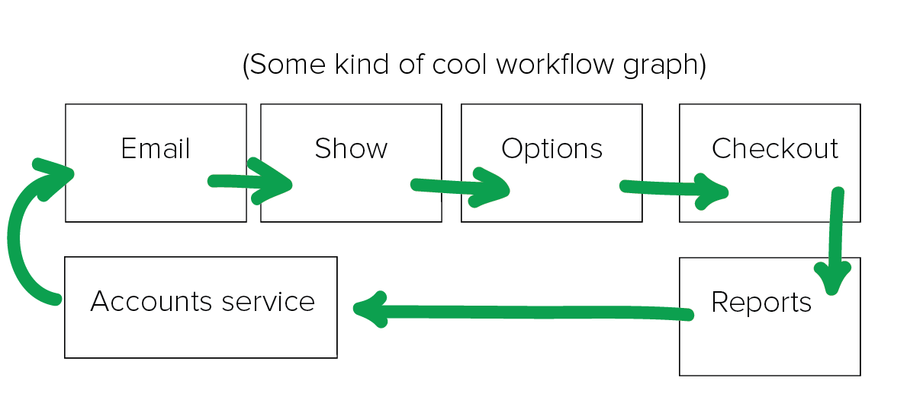
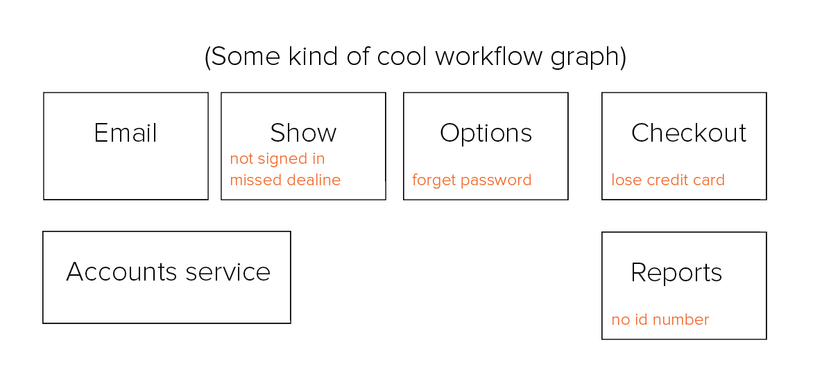

The Daily Gem
A project on personalization
About
The daily gem is a campaign to develop incentives for users.
Leadership Team

Project Manager
Trace Johnson
Trace is leading the charge to ensure everyone gets what they need.

Engineering Lead
David Hassler
David is responsible for architecture and overall execution on the software.

Art Director
Will Harding
Will is in charge of all design components.
Reach
The following internal services will be engaged at some level
Frontend
- Escapes - Hassler
- Browse - Ed Wang
Backend
- City Service - ?
- Promo Codes - ?
Milestones
June 15
June 20
July 1
Technical workflow
items that need to be addressed
The happy path :-)
- notified via email
- lands you on project show page
- keeps track through the confirmation stages
- applied at checkout.
The sad path :-(
- don't qualify
- missed time
- enter the wrong code